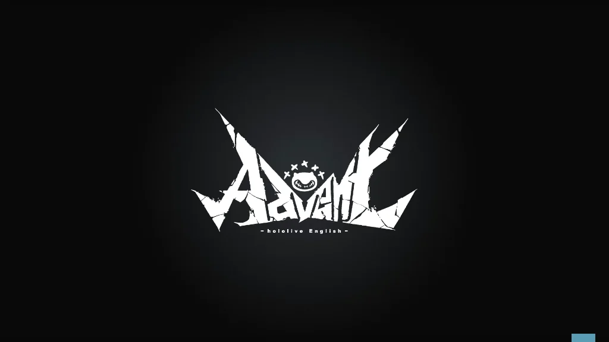
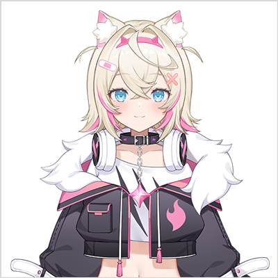

[The Fuzzy One]
Mococo Abyssgard
The fuzzy younger twin sister of The Demonic Guard Dogs, who were sealed away in The Cell
for being a pain in the godly behind, Mococo Abyssgard is “The Fuzzy One.”
The rambunctious Mococo spent all her time imprisoned watching anime and playing games,
often roping her older twin sister Fuwawa and their pet Pero in for more chaotic antics.
It’s rumored that she took part in the prison break just for the heck of it.